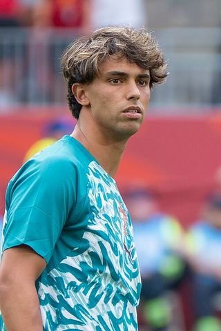

Ezzcoins › Player pages › João Félix Sequeira (FUT Champions)
84
CAM

João Félix
PAC83
SHO83
PAS80
DRI85
DEF46
PHY73
PlayStyles
Finesse ShotLow Driven ShotIncisive PassTechnicalFirst TouchFUT Champions
João Félix Sequeira
84 CAM · Al Nassr · ROSHN Saudi League ·  Portugal
Portugal
No console price yet. New cards are priced every half hour while FUTBIN can be reached.
87Meta rating · CAM +3 vs overall
CAM87ST87LM85LW84
PAC83
SHO83
PAS80
DRI85
DEF46
PHY73
Chemistry style
Turn on JavaScript to see this card with each chemistry style.
- Card
- FUT Champions
- Added
- 2 Oct 2026
- Position
- CAM (also LM, LW, ST)
- Club
- Al Nassr
- League
- ROSHN Saudi League
- Nation
- Portugal
- Skill moves
- 5★
- Weak foot
- 4★
- PlayStyles+
- None
- PlayStyles
- Finesse Shot, Low Driven Shot, Incisive Pass, Technical, First Touch
- Base card
- 83 CAM ›
Meta rating: Ezzcoins' own estimate of how well this card plays in game, worked out from its stats for each position it can play, its skill moves, weak foot and PlayStyle+. An average card scores about its overall rating; higher means it plays above its rating.
Watch on Ezzcoins